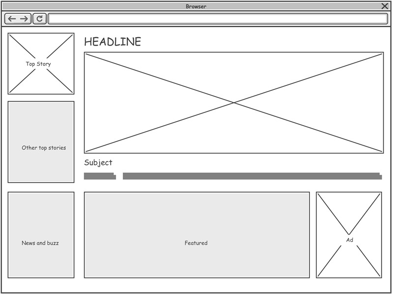

What is the purpose of a README file?
A README.md file is an essential component of many software projects, especially those hosted on platforms
like GitHub. This file serves as the first point of contact for users and developers who want to understand the
purpose, setup,
and usage of a project.In essence, a README is a vital tool for communication and collaboration, making it
easier for others to understand and engage with the project.
Read
more

What is the purpose of a wireframe?
The primary purpose of a wireframe is to establish the basic structure and layout of a website or application
before visual design and content are added. It acts as a blueprint, outlining the placement of elements like
headings, paragraphs, images, buttons, and navigation. Wireframes help designers,
developers, and stakeholders visualize the user experience and identify potential issues early in the project.
Read more

What is a branch in Git?
In Git, branches are a part of your everyday development process. Git branches are effectively a pointer to a
snapshot of your changes.
When you want to add a new feature or fix a bug—no matter how big or how small—you spawn a new branch to
encapsulate your changes.
Read
more